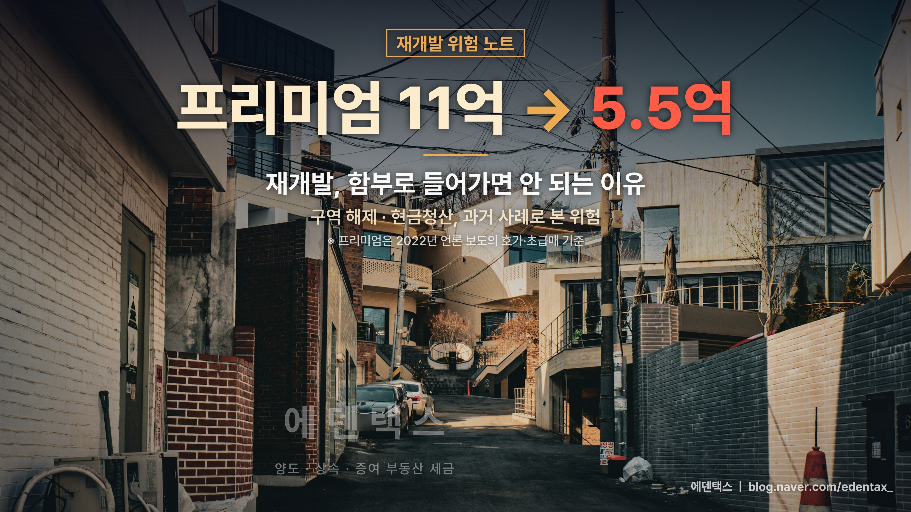
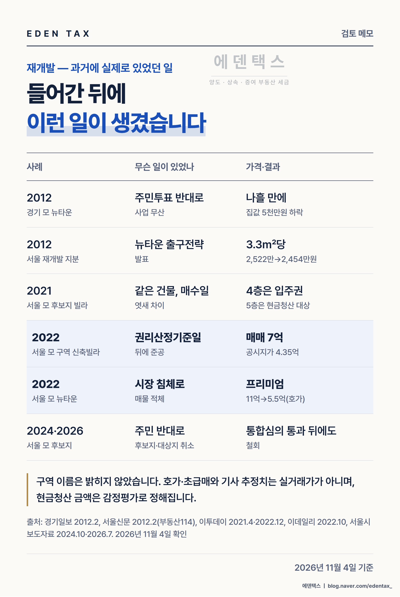

재개발 구역은 분양까지 가면 새 아파트가 되지만, 그 전에 멈추는 곳도 많습니다. 서울시 백서 집계로는 2012년부터 2020년까지 정비구역 등 683곳 가운데 389곳이 해제됐습니다. 아래에서는 사업이 어느 단계에서 멈췄는지에 따라 과거 사례를 나눠 정리했습니다. 특정 구역을 지목하려는 글이 아니어서 구역 이름은 적지 않았습니다. (2026년 11월 4일 기준)

단계별로 본 위험
| 사업 단계 | 과거에 있었던 일 | 근거 규정 |
|---|---|---|
| 후보지 | 주민 반대 동의율 30%를 넘은 후보지 2곳 취소(2024) | 서울시 발표(2024) |
| 구역 지정 후 | 기한 안에 추진위 승인 신청이 없거나 소유자 30% 이상이 요청하면 해제 대상 | 도시정비법 제20조·제21조 |
| 권리산정기준일 이후 | 기준일 뒤 지은 신축빌라는 분양받을 권리가 따로 생기지 않음 | 도시정비법 제77조 |
| 관리처분인가 이후 | 투기과열지구에서는 이때 산 사람은 원칙적으로 조합원이 될 수 없음 | 도시정비법 제39조 제2항 |
| 사업 지연·시장 침체 | 금리 상승기에 프리미엄이 절반 가까이 빠진 사례(호가 기준) | — |
가장 앞 단계인 후보지는 사업이 정해진 상태가 아닙니다. 2021년 후보지로 뽑혀 2023년 기획안까지 확정된 곳도 2024년에 취소됐습니다. 올해는 통합심의를 통과한 모아타운 대상지가 약 4개월 만에 철회되면서 727세대 계획이 없던 일이 됐습니다.
후보지 단계 취소는 고시 의무가 없어서, 취소된 줄 모르고 집을 샀다는 사례가 보도됐습니다. 서울시는 2026년 8월부터 취소구역 주민 안내지침을 따로 시행하고 있습니다.
구역이 풀렸을 때 가격은 어떻게 움직였나
2012년 1월 서울시가 뉴타운·재개발 출구전략을 내놓자, 서울 재개발 지분 가격은 한 달 전 3.3㎡당 평균 2,522만원에서 2,454만원으로 내려갔습니다(부동산114 집계 보도). 개별 구역이 아니라 정책 방향이 바뀐 것만으로 서울 전체 지분값이 움직였습니다.
같은 해 경기도의 한 뉴타운에서는 주민투표 반대가 35.8% 나와 사업이 무산됐습니다. 나흘 만에 집값이 5천만원 떨어졌다는 보도가 뒤따랐습니다.

매수일과 준공일이 권리를 가른 사례
2021년 2·4대책 때 정부는 공공 주도 사업 후보지에서 발표일 뒤에 산 집은 입주권 없이 현금청산하겠다고 밝혔습니다. 서울의 한 빌라에서는 2월 3일에 산 4층은 입주권을 받을 수 있고, 2월 9일에 산 5층은 현금청산 대상이 될 상황이라는 보도가 나왔습니다. 현금청산 금액은 감정평가로 정해지며, 시세보다 낮게 나오는 경우가 많다는 지적이 당시 기사에 함께 실렸습니다.
민간 재개발에서는 권리산정기준일이 같은 역할을 합니다. 이날 뒤에 땅을 나누거나 단독주택을 다세대로 바꿔 소유자가 늘어난 집은 분양받을 권리가 따로 산정되지 않습니다.
2022년 서울의 한 재개발 추진지에서는 기준일 뒤에 사용승인이 난 신축빌라가 7억원에 매물로 나왔습니다. 한 언론은 공시지가 4억 3,500만원과 비교해 2억 6,500만원을 손해 볼 수 있다고 계산했습니다. 실제 청산 금액은 감정평가로 정해지므로 이 숫자는 기사가 단순 계산한 추정치입니다.
투기과열지구 규제도 구역마다 적용이 다릅니다. 2025년 10월 서울 21개 자치구가 새로 지정되면서 서울 25개 구 전체가 투기과열지구입니다(2026년 6월 국토부 자료 기준). 관리처분인가 뒤 조합원 지위 양도를 막는 규정은 2018년 1월 25일 이후 처음 사업시행인가를 신청한 구역부터 적용되므로, 같은 구 안에서도 구역별로 확인하셔야 합니다. 장기 보유·거주한 1주택자 매물 등은 예외입니다.
사업이 늦어질 때 프리미엄
구역이 풀리지 않아도 일정이 밀리면 가격이 흔들립니다. 2022년 보도를 보면 서울의 한 뉴타운에서 전년 최고 11억원까지 붙었던 프리미엄이 초급매 5억 5천만원까지 내려왔습니다. 다른 뉴타운 인근에서는 4억원대 프리미엄이 1억원대로 떨어졌습니다.
모두 호가와 급매를 옮긴 숫자라 실거래가와 다를 수 있습니다. 조합 갈등이나 공사비 다툼으로 기간이 늘어나면, 그동안의 대출 이자도 매수자가 부담하게 됩니다.
매수 전에 같이 계산할 세금
| 항목 | 내용 | 근거 |
|---|---|---|
| 취득세 | 관리처분인가 전 빌라는 주택으로 봅니다. 서울에서 2주택이 되면 8%, 3주택 이상이면 12% | 지방세법 제13조의2 |
| 기존 집 처분기한 | 서울 안 갈아타기는 2026년 10월부터 원칙적으로 2년. 그 전 계약 등은 종전 3년이 적용될 수 있음 | 2026년 10월 시행 개정 |
| 기존 집 비과세 | 입주권이 된 뒤에도 기존 집 비과세 판단 때 주택 수에 들어감 | 소득세법 제89조 제2항 |
| 양도차손 | 같은 해에 판 다른 토지·건물·부동산 권리의 차익에서 뺄 수 있고, 다음 해로 넘기지 못함 | 소득세법 제102조 제2항 |
일시적 2주택에 해당하면 취득세 중과에서 빠집니다. 다만 구역이 해제되거나 사업이 멈추면 빌라는 입주권이 되지 못한 채 오래된 주택으로 남습니다. 그래도 기존 집 처분기한은 계속 흘러가므로, 매수 전에 두 일정을 함께 놓고 보셔야 합니다.
손해를 보고 팔 가능성이 있다면 처분 연도도 미리 정해 두는 편이 좋습니다. 차익이 난 다른 부동산을 같은 해에 팔면 차손을 공제받을 수 있습니다.
계약서 쓰기 전 확인 목록
- 서울시 '정비사업 정보몽땅'에서 구역의 현재 단계와 취소·해제 공고
- 구청 담당 부서에서 권리산정기준일, 매수할 집의 사용승인일
- 투기과열지구라면 관리처분인가 여부와 최초 사업시행인가 신청일
- 조합(추진위) 동의율, 반대 움직임, 소송 여부
- 본인 기존 집의 처분기한과 취득세 중과 여부
에덴택스는 국세청 출신 세무사가 양도·상속·증여·취득까지 부동산 세금을 직접 봅니다. 재개발 구역 매수를 검토 중이시라면 기존 주택 현황과 매수할 물건의 등기부를 가지고 오시면 취득세와 기존 집 처분 일정부터 함께 정리해 드립니다.
※ 2026년 11월 4일 기준입니다. 사례의 가격은 당시 언론 보도(호가·급매·기사 추정치 포함)를 옮긴 것으로 실거래가와 다를 수 있으며, 특정 구역을 지목하거나 평가하는 글이 아닙니다. 해제 구역 수는 서울시 집계입니다. 법령은 2026년 11월 4일 현행 조문 기준이며 구역별 적용 여부는 개별 확인이 필요합니다.
※ 본 글은 세무·부동산 분석을 위한 참고자료로, 개별 세무상담이나 신고 검토를 대체하지 않으며 투자·청약을 권유하지 않습니다. 세금 신고 및 투자 결정 전 전문가의 검토를 받으시기 바라며, 이를 활용한 판단과 결과의 책임은 이용자에게 있습니다.